המסכים הראשונים, כמו שהם היום
צילומים של dev על מכשיר חדש לגמרי, בשמונה בערב, בגודל של טלפון: כל כרטיס של מסך הכניסה, ואז הכניסה הראשונה לכל אזור כשאין בו עדיין כלום.
מסך הכניסה
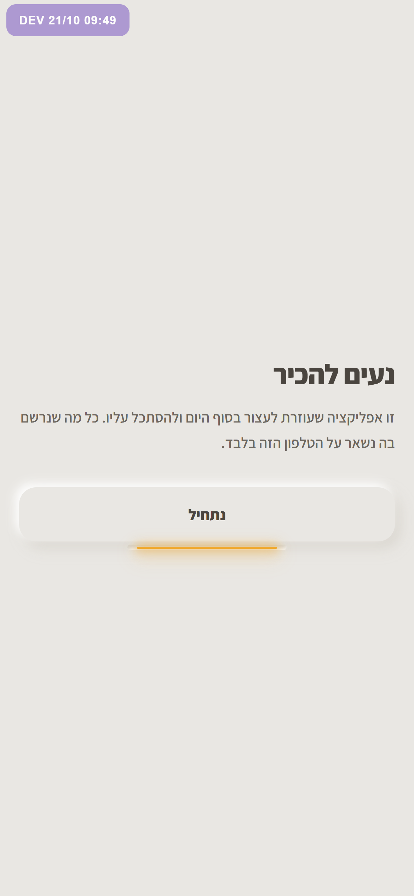
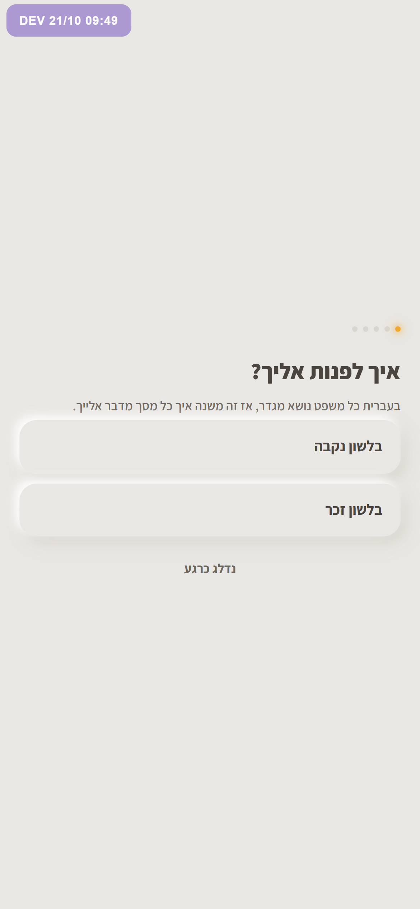
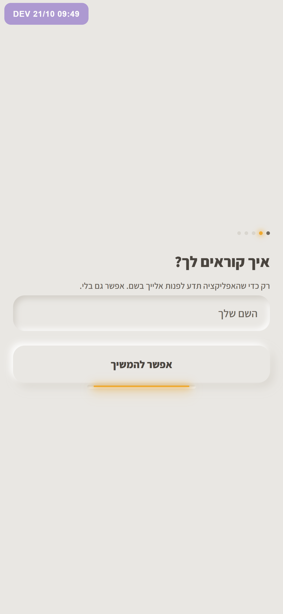
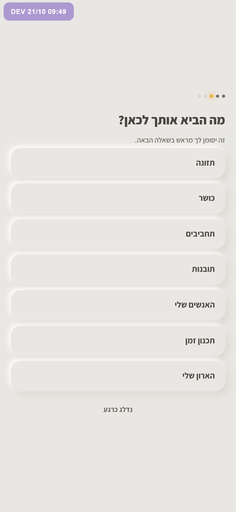
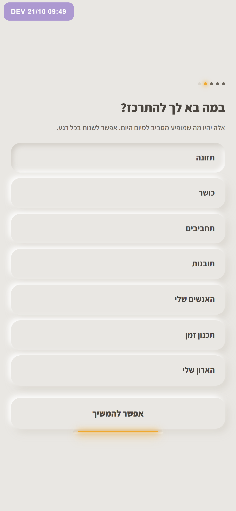
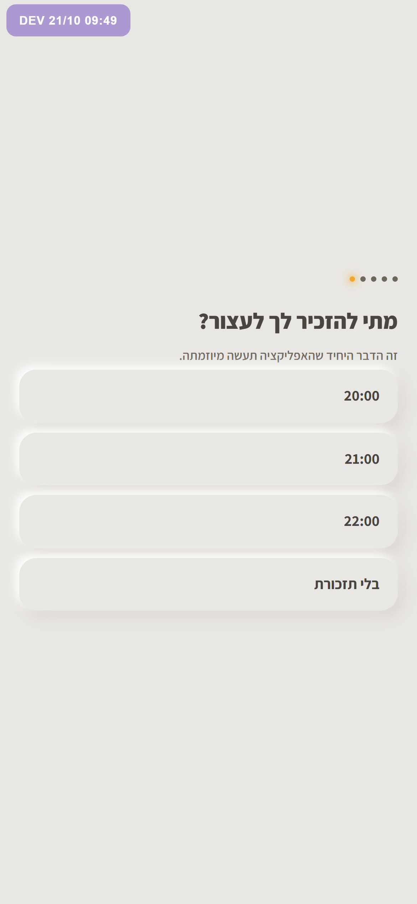
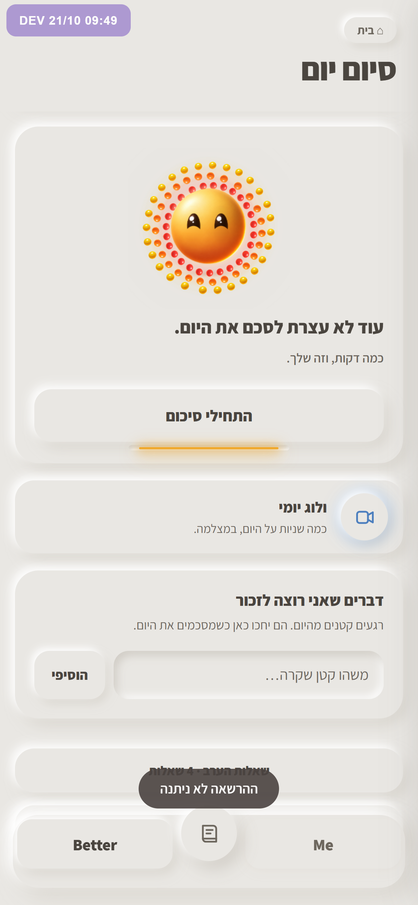
- תוקן כבר: בלילה מסך הכניסה קיבל את צבעי הלילה של המסך הראשי, כפתורים כמעט שחורים וכותרת שכמעט לא רואים. זה באג שאני הכנסתי אתמול. ב־dev זה כבר מתוקן, ביציב עדיין לא.
- שתי שאלות כמעט זהות ברצף. "מה הביא אותך לכאן?" ו"במה בא לך להתרכז?" מציגות את אותה רשימה של שבעה אזורים, אחת אחרי השנייה.
- כל כרטיס הוא אותו טופס. שאלה, שורה אפורה, רשימת כפתורים. אין רגע אחד שמראה איך האפליקציה נראית, וגם החוגה לא מופיעה בכלל לפני הכניסה.
- הנחיתה מוזרה. מיד אחרי הכניסה היא נוחתת בסיום יום, עם "עוד לא עצרת לסכם את היום", על יום שעוד לא רשמה בו כלום. אם היא מסרבה להתראות, הדבר הראשון שהיא רואה הוא "ההרשאה לא ניתנה".
הכניסה הראשונה לכל אזור
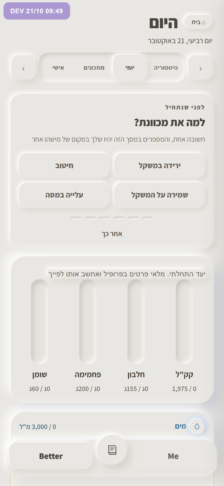
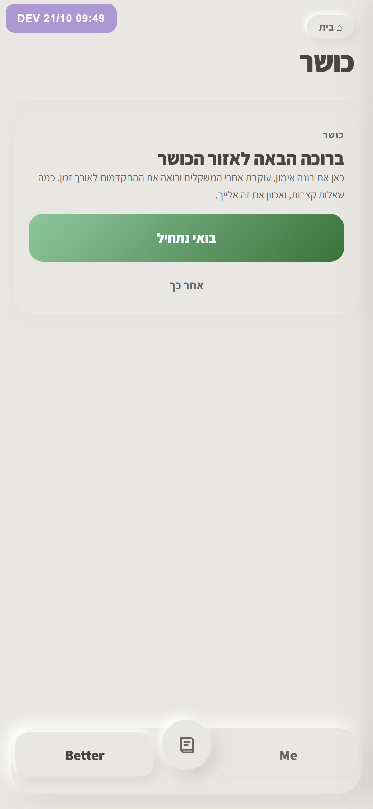
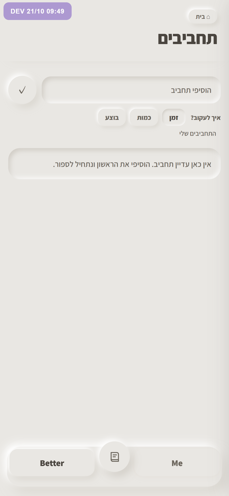
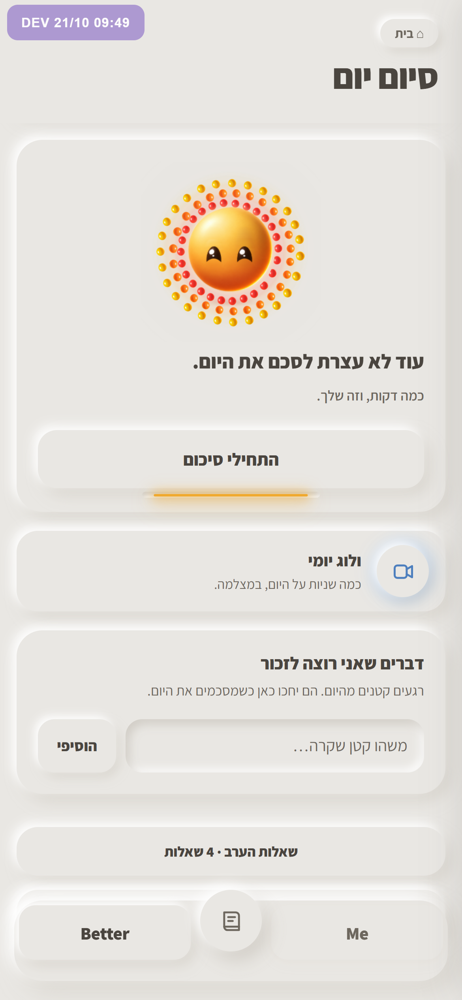
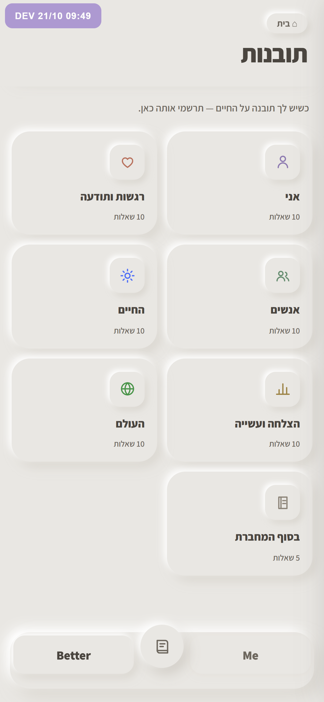
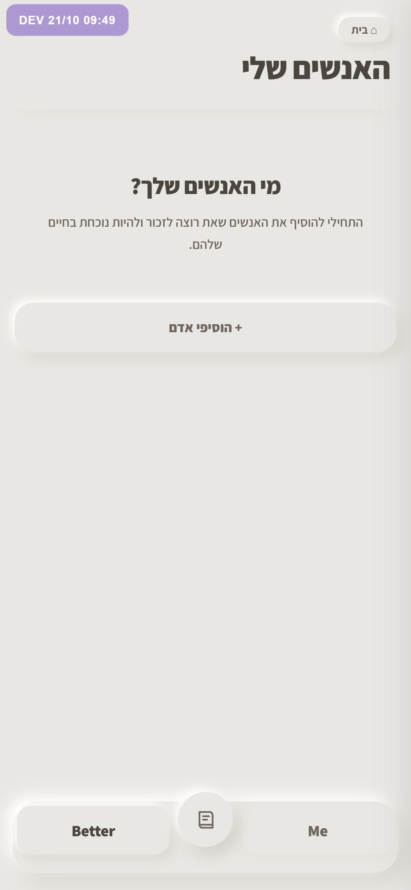
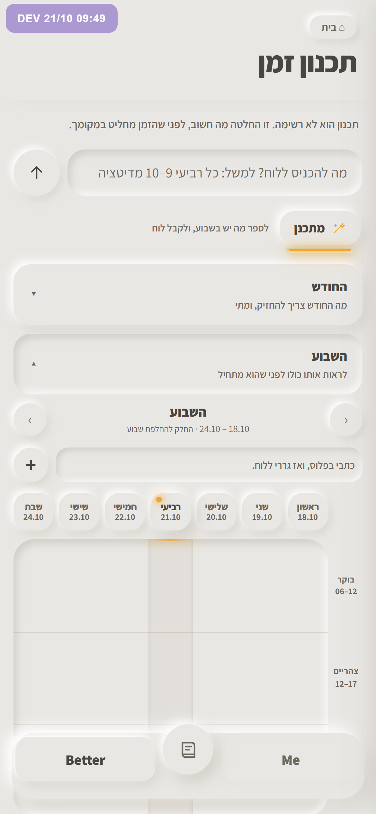
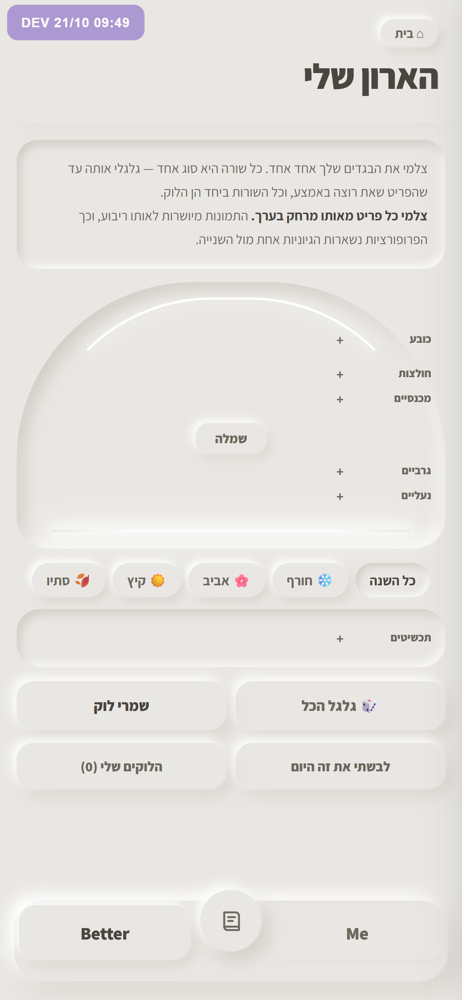
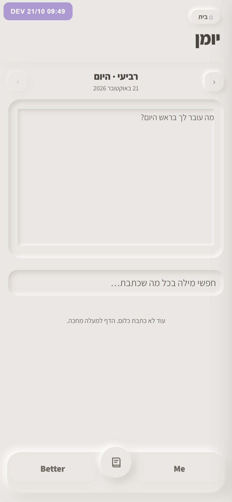
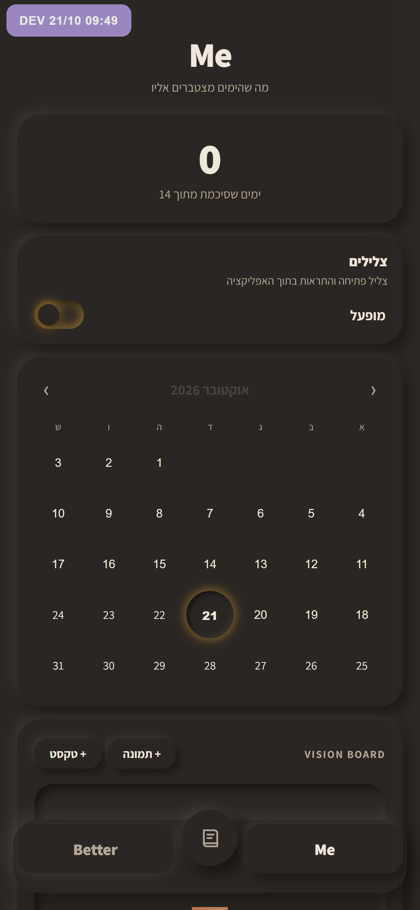
- אין דפוס אחד. לכל אזור יש קבלת פנים אחרת. בתזונה יש שאלה על המטרה, ובכושר "ברוכה הבאה" עם כפתור ירוק מלא שלא דומה לשום דבר אחר באפליקציה. בתחביבים ובתובנות אין הסבר בכלל, ובאנשים שלי יש מצב ריק נחמד.
- תכנון זמן והארון מציגים הכול בבת אחת. צ'אט, שבוע ולוח זמנים, או פסקה ארוכה, קולב ושורות כפתורים, לפני שהיא עשתה בהם משהו אחד.
- Me נפתח כהה עם 0 ולוח שנה ריק. זה המקום שבו "כמה עשיתי" אמור לשמח, ובהתחלה הוא אומר רק אפס.